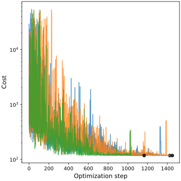
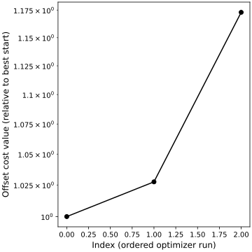
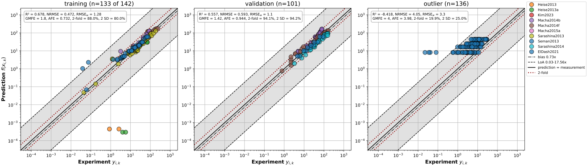
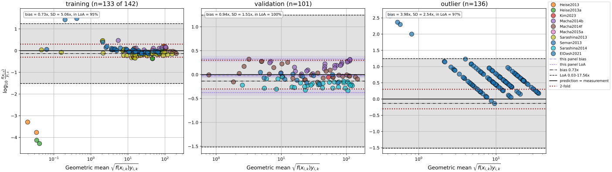
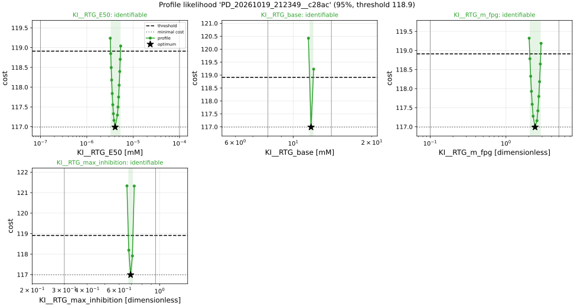

Empagliflozin PBPK/PD model: fit PD
PDF · Typst · LaTeX · LaTeX document · BibTeXMethods: Empagliflozin PBPK/PD model: fit PD
Parameters and data
4 parameters were optimized: EC50 reduction in RTG (KI__RTG_E50), baseline RTG (KI__RTG_base), FPG effect on RTG (KI__RTG_m_fpg) and maximal relative reduction of the RTG (KI__RTG_max_inhibition). The parameters of the adopted fit PK_20261019_201013__13ddc were fixed at their fitted values.
A fit mapping is a curve of a study, the data and the observable of the model it is compared with. The fit has 28 fit mappings of training data with 142 data points, whose residuals enter the objective; 14 fit mappings of validation data with 101 data points, which were simulated and evaluated with the fitted parameters but not fitted; and 34 fit mappings of outliers with 136 data points, data the fit dropped as not usable, which were evaluated like the validation data so that the decision to drop them can be checked. The fit was set up and run with sbmlsim [1].
Objective function
The parameters were estimated by minimizing the objective function
where runs over the fit mappings of the training data and over their data points, is the residual, the weight of the data point and the loss function, applied to the squared weighted residual . The loss function is linear, , i.e. a standard least squares problem.
The residuals are normalized by the mean of the data of their curve, which makes curves of different quantities and magnitudes comparable:
The weight of curve is , the weight of its fit mapping (the weight its fit mapping collection assigns, 1 by default, or, for a collection which uses the weights of its mappings, the weight of the mapping, by default the number of subjects of its data) divided by the number of its data points.
A data point is weighted with the inverse of its coefficient of variation, , with the standard deviation of the data point, or its standard error for data without a standard deviation. An error of zero is missing, a missing error of a curve with errors is replaced by the largest error of the curve, and the data points of a curve without errors have the weight , the weight of a coefficient of variation of 0.5.
Optimization
The optimizer searched the parameters in log10 space within their bounds; bounds, values and intervals are given in the units of the fit parameters, the units of the table of the parameters.
The objective was minimized in 3 runs with differential evolution [2] of SciPy [3] within the bounds of the parameters, with the strategy best1bin, a population of 15 times the number of parameters, at most 1000 generations, the relative tolerance 0.01 of convergence, the recombination constant 0.7 and a mutation dithered between 0.5 and 1. The initial population of a run was drawn by latin hypercube sampling [4], with a seed of every run derived from the seed 1234 of the fit. The best member of the final population was polished with the L-BFGS-B method of SciPy.
The convergence of the runs was assessed from the traces of their cost and the waterfall plot of their final costs, and the parameter set with the lowest cost was used.
The models were simulated with libRoadRunner [5] and its integrator CVODE [6] with the relative tolerance and the absolute tolerances of an amount, of a concentration and of the other states, which for a species in a concentration is multiplied by the initial volume of its compartment. It ran with the variable step size of libRoadRunner, i.e. with an output at every step of the integrator. A data point at the time of a change after the start of a simulation, e.g. a dose or the reset of a collection, was compared with the state before the change, except the first data point of a curve with data at later times, which starts a collection and was compared with the state after the change.
Goodness of fit
The goodness of fit is given per kind of data (training data, validation data and outliers) by metrics over its data points with the residuals at the fitted parameters , the mean squared error, its root and the root mean squared error normalized by the mean of the data of the curve of a point:
The root mean square of the residuals of the objective, i.e. what the fit minimizes, and the coefficient of determination:
The predictions of a non-linear model are no linear regression of the data, so can be negative: the prediction is worse than the mean of the data. The information criteria of Akaike [7] and Schwarz [8] with the number of fitted parameters are those of a least squares fit with normally distributed residuals, up to an additive constant, so only differences between models fitted to the same data are meaningful:
The percentage of the data points whose prediction lies within twofold of the data is taken over the data points with positive data and a positive prediction ; the others have no ratio and are not counted, and a kind of data without such a point has no percentage:
The goodness of fit plot shows the predictions against the data on logarithmic axes, with the lines of twofold and . The Bland-Altman plot [9] shows the ratio of prediction and data as against the geometric mean for the data points with positive values, with the bias and the limits of agreement , with the sample standard deviation of , of the training data; they are read as the fold factors and .
Identifiability
The identifiability of the parameters was analysed with the profile likelihood [10, 11]. The profile of a parameter is the lowest objective with the parameter fixed:
At every point of a scan the other parameters were re-optimized from the previous point with the least squares optimizer of SciPy with the relative step 0.05. A scan ran from the optimum in both directions in the space of the optimizer, with steps in decades of the parameter, starting at 0.1. A step which raised the objective by more than 0.2 of the distance between the objective at the optimum and the threshold was reduced by the factor 2 and repeated, down to 0.01, and the step after one which raised it by less than that divided by the factor was enlarged by the factor, up to 1. A scan stopped at the threshold, at the bound of the parameter, at a point which failed or after 50 points.
The confidence intervals are the values at which the profile crosses the threshold of the likelihood ratio test
with the lowest objective of the fit and of all profiles and the quantile of the distribution at the confidence level with df = 1 degrees of freedom, i.e. 1.92 above the lowest objective. The threshold has this confidence level if is the negative log-likelihood of the data up to a constant, i.e. if the weighted residuals are independent and normally distributed with unit variance; otherwise the level is approximate. A crossing is interpolated between two points of the profile, on the logarithm of a parameter on a logarithmic scale. A parameter is identifiable if its profile reaches the threshold within the scan on both sides of the optimum, i.e. its confidence interval is finite; practically non-identifiable towards the lower bound if its profile reaches the threshold above the optimum but not below it within the scan, which ends at the lower bound or after 50 points; practically non-identifiable towards the upper bound if its profile reaches the threshold below the optimum but not above it within the scan, which ends at the upper bound or after 50 points; practically non-identifiable if its profile reaches the threshold on neither side within the scans, which end at the bounds or after 50 points, and is not flat; and structurally non-identifiable if its profile is flat on both sides. A side of a profile is flat if it rises by less than 0.05 of the distance between the lowest objective and the threshold, and a profile with a point which failed or did not converge is not classified. The profile likelihood is preferred over the intervals of the Fisher information, its intervals are invariant under a transformation of the parameters and can be asymmetric [12].
The Fisher information is the local alternative to the profiles: it is the Gauss-Newton approximation of the curvature of the objective at the optimum, from the Jacobian of the weighted residuals of the training data with respect to the parameters in the space of the optimizer, computed by central finite differences with the step of the parameter :
with the number of data points of the training data and the number of parameters. The information has rank 4 of 4, the number of its eigenvalues above of the largest one, and the condition number 341; the covariance of an information of a lower rank is computed with the pseudo-inverse. The Wald intervals are with the standard errors at the confidence level , transformed back into the units of the fit parameters.
Provenance
The fit PD_20261019_212349__c28ac was run on 2026-10-19 19:23:52 UTC with sbmlsim 0.10.0 [1], libRoadRunner 2.10.0 [5], SciPy 1.18.1 [3], NumPy 2.5.3 [13] and Python 3.14.4 (seed 1234). The models and data were those of commit 08c12f842598ef533d44304f41ec501edf0f670d of /home/mkoenig/git/pkdb_models-empagliflozin; their SHA-256 checksums are listed in Table 1. The fit kept the values ftissue_emp = 1.11017, Kp_emp = 0.23816, ftissue_deep_emp = 0.112609, Kp_deep_emp = 0.418947, GU__EMPABS_k = 0.0129016, GU__F_emp_abs = 0.438441, GU__METEXC_k = , GU__FED_f_absorption = 0.549647, EMP2EG_k = 0.0176462, KI__EMPSEC_f = 1.31094 and KI__EGEX_f = 1.66201 of the model fixed.
| File | SHA-256 |
|---|---|
pkdb_models/models/empagliflozin/data/dapagliflozin/Kim2023/.Kim2023_Fig1.tsv | faf8a67de950... |
pkdb_models/models/empagliflozin/data/dapagliflozin/Kim2023/.Kim2023_Fig2.tsv | 7419518c5dc2... |
pkdb_models/models/empagliflozin/data/dapagliflozin/Kim2023/.Kim2023_Tab2.tsv | e4b13d62892b... |
pkdb_models/models/empagliflozin/data/dapagliflozin/Kim2023/.Kim2023_Tab3.tsv | ea1325423a66... |
pkdb_models/models/empagliflozin/data/dapagliflozin/Kim2023/.Kim2023_TabGroups.tsv | e6e46d776a7a... |
pkdb_models/models/empagliflozin/data/dapagliflozin/Kim2023/.Kim2023_TabInterventions.tsv | 00fa9049fea8... |
pkdb_models/models/empagliflozin/data/dapagliflozin/Kim2023/.Kim2023_TabS2.tsv | aa635231e391... |
pkdb_models/models/empagliflozin/data/dapagliflozin/vanderAartvanderBeek2020/.vanderAartvanderBeek2020_Fig3.tsv | 2bd012174836... |
pkdb_models/models/empagliflozin/data/dapagliflozin/vanderAartvanderBeek2020/.vanderAartvanderBeek2020_TabGroups.tsv | 033515791883... |
pkdb_models/models/empagliflozin/data/dapagliflozin/vanderAartvanderBeek2020/.vanderAartvanderBeek2020_TabIndividuals.tsv | 77b6cfffbdb8... |
pkdb_models/models/empagliflozin/data/dapagliflozin/vanderAartvanderBeek2020/.vanderAartvanderBeek2020_TabInterventions.tsv | 86f743929d49... |
pkdb_models/models/empagliflozin/data/empagliflozin/Ayoub2017/.Ayoub2017_Fig6.tsv | 830026ab86aa... |
pkdb_models/models/empagliflozin/data/empagliflozin/Ayoub2017/.Ayoub2017_Tab1.tsv | 2191c2e86f41... |
pkdb_models/models/empagliflozin/data/empagliflozin/Ayoub2017/.Ayoub2017_TabGroups.tsv | ab84d27300d7... |
pkdb_models/models/empagliflozin/data/empagliflozin/Ayoub2017/.Ayoub2017_TabInterventions.tsv | 2eebacd7400e... |
pkdb_models/models/empagliflozin/data/empagliflozin/Brand2012/.Brand2012_Fig2.tsv | f1b64174e094... |
pkdb_models/models/empagliflozin/data/empagliflozin/Brand2012/.Brand2012_Fig3.tsv | b8564d1b1a50... |
pkdb_models/models/empagliflozin/data/empagliflozin/Brand2012/.Brand2012_Fig4.tsv | 0f0f7ba3c41f... |
pkdb_models/models/empagliflozin/data/empagliflozin/Brand2012/.Brand2012_Fig5.tsv | d32555572f67... |
pkdb_models/models/empagliflozin/data/empagliflozin/Brand2012/.Brand2012_Tab1.tsv | edca065d782f... |
pkdb_models/models/empagliflozin/data/empagliflozin/Brand2012/.Brand2012_TabGroups.tsv | ee2e1d8b121f... |
pkdb_models/models/empagliflozin/data/empagliflozin/Brand2012/.Brand2012_TabInterventions.tsv | a0113deb79ef... |
pkdb_models/models/empagliflozin/data/empagliflozin/Chen2015a/.Chen2015a_Fig1.tsv | 57d1bcb1699e... |
pkdb_models/models/empagliflozin/data/empagliflozin/Chen2015a/.Chen2015a_Fig2.tsv | 46fa14430531... |
pkdb_models/models/empagliflozin/data/empagliflozin/Chen2015a/.Chen2015a_Tab1.tsv | 4274ba8eabce... |
pkdb_models/models/empagliflozin/data/empagliflozin/Chen2015a/.Chen2015a_Tab2.tsv | e867dab9f8cb... |
pkdb_models/models/empagliflozin/data/empagliflozin/Chen2015a/.Chen2015a_Tab2A.tsv | 056a6134d497... |
pkdb_models/models/empagliflozin/data/empagliflozin/Chen2015a/.Chen2015a_TabGroups.tsv | 6996658d26dc... |
pkdb_models/models/empagliflozin/data/empagliflozin/Chen2015a/.Chen2015a_TabInterventions.tsv | 0a85f5e98b81... |
pkdb_models/models/empagliflozin/data/empagliflozin/Chen2020/.Chen2020_Fig2.tsv | 4bec8b2edb45... |
pkdb_models/models/empagliflozin/data/empagliflozin/Chen2020/.Chen2020_Tab3.tsv | fe8023eb0c58... |
pkdb_models/models/empagliflozin/data/empagliflozin/Chen2020/.Chen2020_TabGroups.tsv | febcf7e197e5... |
pkdb_models/models/empagliflozin/data/empagliflozin/Chen2020/.Chen2020_TabInterventions.tsv | 4f5508a75efa... |
pkdb_models/models/empagliflozin/data/empagliflozin/ElDash2021/.ElDash2021_Fig4.tsv | 23df1284387a... |
pkdb_models/models/empagliflozin/data/empagliflozin/ElDash2021/.ElDash2021_Fig4A.tsv | 814ff7de2b71... |
pkdb_models/models/empagliflozin/data/empagliflozin/ElDash2021/.ElDash2021_Tab2.tsv | e225cf2b5de6... |
pkdb_models/models/empagliflozin/data/empagliflozin/ElDash2021/.ElDash2021_Tab2A.tsv | 0fd121878a39... |
pkdb_models/models/empagliflozin/data/empagliflozin/ElDash2021/.ElDash2021_Tab3.tsv | 75e407f845f1... |
pkdb_models/models/empagliflozin/data/empagliflozin/ElDash2021/.ElDash2021_TabGroups.tsv | 4e30f7c4ce3e... |
pkdb_models/models/empagliflozin/data/empagliflozin/ElDash2021/.ElDash2021_TabIndividuals.tsv | 56829d1f73fc... |
pkdb_models/models/empagliflozin/data/empagliflozin/ElDash2021/.ElDash2021_TabInterventions.tsv | 4b1eda3294a7... |
pkdb_models/models/empagliflozin/data/empagliflozin/Friedrich2013/.Friedrich2013_Fig2.tsv | ce73993247d4... |
pkdb_models/models/empagliflozin/data/empagliflozin/Friedrich2013/.Friedrich2013_Fig3.tsv | 90be18b86d0b... |
pkdb_models/models/empagliflozin/data/empagliflozin/Friedrich2013/.Friedrich2013_Fig4.tsv | 7d30a98b6ffe... |
pkdb_models/models/empagliflozin/data/empagliflozin/Friedrich2013/.Friedrich2013_Tab1.tsv | d1d9552db4ea... |
pkdb_models/models/empagliflozin/data/empagliflozin/Friedrich2013/.Friedrich2013_TabGroups.tsv | f8ea11cf65e0... |
pkdb_models/models/empagliflozin/data/empagliflozin/Friedrich2013/.Friedrich2013_TabInterventions.tsv | 434be09ad515... |
pkdb_models/models/empagliflozin/data/empagliflozin/Hailat2022/.Hailat2022_Fig3.tsv | 139bc766d99d... |
pkdb_models/models/empagliflozin/data/empagliflozin/Hailat2022/.Hailat2022_Tab1.tsv | e0b77505411f... |
pkdb_models/models/empagliflozin/data/empagliflozin/Hailat2022/.Hailat2022_TabGroups.tsv | 8b29e335ec42... |
pkdb_models/models/empagliflozin/data/empagliflozin/Hailat2022/.Hailat2022_TabInterventions.tsv | 3876a660e5fb... |
pkdb_models/models/empagliflozin/data/empagliflozin/Heise2013/.Heise2013_Fig1.tsv | 6413d99630e7... |
pkdb_models/models/empagliflozin/data/empagliflozin/Heise2013/.Heise2013_Fig2.tsv | b0d17dede829... |
pkdb_models/models/empagliflozin/data/empagliflozin/Heise2013/.Heise2013_Fig3.tsv | ed0a136d5efc... |
pkdb_models/models/empagliflozin/data/empagliflozin/Heise2013/.Heise2013_Fig4.tsv | a620d58de7e6... |
pkdb_models/models/empagliflozin/data/empagliflozin/Heise2013/.Heise2013_Tab6.tsv | ff90e467e3d3... |
pkdb_models/models/empagliflozin/data/empagliflozin/Heise2013/.Heise2013_TabGroups.tsv | a9d281bb0721... |
pkdb_models/models/empagliflozin/data/empagliflozin/Heise2013/.Heise2013_TabInterventions.tsv | 0fbec9a9334c... |
pkdb_models/models/empagliflozin/data/empagliflozin/Heise2013a/.Heise2013a_Fig1.tsv | d7ef90c081ca... |
pkdb_models/models/empagliflozin/data/empagliflozin/Heise2013a/.Heise2013a_Fig2.tsv | 66764cc30622... |
pkdb_models/models/empagliflozin/data/empagliflozin/Heise2013a/.Heise2013a_Fig3.tsv | e992233a9aed... |
pkdb_models/models/empagliflozin/data/empagliflozin/Heise2013a/.Heise2013a_Fig4.tsv | f11821054eb6... |
pkdb_models/models/empagliflozin/data/empagliflozin/Heise2013a/.Heise2013a_Fig5.tsv | 198d2c12a5e2... |
pkdb_models/models/empagliflozin/data/empagliflozin/Heise2013a/.Heise2013a_Tab2.tsv | 6c183fd83c95... |
pkdb_models/models/empagliflozin/data/empagliflozin/Heise2013a/.Heise2013a_TabGroups.tsv | 31996969859e... |
pkdb_models/models/empagliflozin/data/empagliflozin/Heise2013a/.Heise2013a_TabInterventions.tsv | 7213cbe2ee96... |
pkdb_models/models/empagliflozin/data/empagliflozin/Jiang2023b/.Jiang2023b_Fig2.tsv | bf9f8abfed43... |
pkdb_models/models/empagliflozin/data/empagliflozin/Jiang2023b/.Jiang2023b_Fig3.tsv | d0e372fceddf... |
pkdb_models/models/empagliflozin/data/empagliflozin/Jiang2023b/.Jiang2023b_Tab2.tsv | aee5392d871d... |
pkdb_models/models/empagliflozin/data/empagliflozin/Jiang2023b/.Jiang2023b_TabGroups.tsv | c2d1464f4014... |
pkdb_models/models/empagliflozin/data/empagliflozin/Jiang2023b/.Jiang2023b_TabIndividuals.tsv | 659b312ed557... |
pkdb_models/models/empagliflozin/data/empagliflozin/Jiang2023b/.Jiang2023b_TabInterventions.tsv | 892e79317068... |
pkdb_models/models/empagliflozin/data/empagliflozin/Kim2021/.Kim2021_Fig3.tsv | 15c006f54d5b... |
pkdb_models/models/empagliflozin/data/empagliflozin/Kim2021/.Kim2021_Fig4.tsv | b9e087186bd9... |
pkdb_models/models/empagliflozin/data/empagliflozin/Kim2021/.Kim2021_Tab1.tsv | 93751dfde883... |
pkdb_models/models/empagliflozin/data/empagliflozin/Kim2021/.Kim2021_TabGroups.tsv | 273123c26d6a... |
pkdb_models/models/empagliflozin/data/empagliflozin/Kim2021/.Kim2021_TabIndividuals.tsv | 0bd41eeee9de... |
pkdb_models/models/empagliflozin/data/empagliflozin/Kim2021/.Kim2021_TabInterventions.tsv | 4c4dad71776d... |
pkdb_models/models/empagliflozin/data/empagliflozin/Laffel2018/.Laffel2018_Fig1.tsv | ecc2db7ac712... |
pkdb_models/models/empagliflozin/data/empagliflozin/Laffel2018/.Laffel2018_Fig2.tsv | 2b0f88f25bf3... |
pkdb_models/models/empagliflozin/data/empagliflozin/Laffel2018/.Laffel2018_Fig3.tsv | b25c2a39c8f6... |
pkdb_models/models/empagliflozin/data/empagliflozin/Laffel2018/.Laffel2018_Tab2.tsv | 29a57164aeee... |
pkdb_models/models/empagliflozin/data/empagliflozin/Laffel2018/.Laffel2018_Tab3.tsv | 5dfd88cb9326... |
pkdb_models/models/empagliflozin/data/empagliflozin/Laffel2018/.Laffel2018_TabGroups.tsv | 0bdd74a75fb5... |
pkdb_models/models/empagliflozin/data/empagliflozin/Laffel2018/.Laffel2018_TabInterventions.tsv | 42e5e466779f... |
pkdb_models/models/empagliflozin/data/empagliflozin/Li2020/.Li2020_Fig2.tsv | f6a0bc9ad8e0... |
pkdb_models/models/empagliflozin/data/empagliflozin/Li2020/.Li2020_Fig3.tsv | 13a4e31ce31c... |
pkdb_models/models/empagliflozin/data/empagliflozin/Li2020/.Li2020_Tab3.tsv | f4f5e90d19a1... |
pkdb_models/models/empagliflozin/data/empagliflozin/Li2020/.Li2020_TabGroups.tsv | e40e7e0fc7fc... |
pkdb_models/models/empagliflozin/data/empagliflozin/Li2020/.Li2020_TabInterventions.tsv | dc30a2e7e11d... |
pkdb_models/models/empagliflozin/data/empagliflozin/Macha2013e/.Macha2013e_Fig2.tsv | 5eba5b683159... |
pkdb_models/models/empagliflozin/data/empagliflozin/Macha2013e/.Macha2013e_Fig3.tsv | a7baa9ad84c1... |
pkdb_models/models/empagliflozin/data/empagliflozin/Macha2013e/.Macha2013e_Tab1.tsv | 5bba81ffec82... |
pkdb_models/models/empagliflozin/data/empagliflozin/Macha2013e/.Macha2013e_Tab3.tsv | 7896cd6a0da5... |
pkdb_models/models/empagliflozin/data/empagliflozin/Macha2013e/.Macha2013e_Tab4.tsv | f5441082ceda... |
pkdb_models/models/empagliflozin/data/empagliflozin/Macha2013e/.Macha2013e_TabGroups.tsv | 469a88aeb4e7... |
pkdb_models/models/empagliflozin/data/empagliflozin/Macha2013e/.Macha2013e_TabInterventions.tsv | aeedec7c1ba5... |
pkdb_models/models/empagliflozin/data/empagliflozin/Macha2014/.Macha2014_Fig2.tsv | 64103c1b3835... |
pkdb_models/models/empagliflozin/data/empagliflozin/Macha2014/.Macha2014_Tab1.tsv | 482297f66665... |
pkdb_models/models/empagliflozin/data/empagliflozin/Macha2014/.Macha2014_Tab3.tsv | c89423f30f44... |
pkdb_models/models/empagliflozin/data/empagliflozin/Macha2014/.Macha2014_TabGroups.tsv | aa804cc647f2... |
pkdb_models/models/empagliflozin/data/empagliflozin/Macha2014/.Macha2014_TabInterventions.tsv | 977f0b85a2db... |
pkdb_models/models/empagliflozin/data/empagliflozin/Macha2014b/.Macha2014b_Fig1.tsv | 7984385f17ef... |
pkdb_models/models/empagliflozin/data/empagliflozin/Macha2014b/.Macha2014b_Fig2.tsv | 5f6cb4a3b7a4... |
pkdb_models/models/empagliflozin/data/empagliflozin/Macha2014b/.Macha2014b_Fig3.tsv | d4cfdc0a58e0... |
pkdb_models/models/empagliflozin/data/empagliflozin/Macha2014b/.Macha2014b_Fig4.tsv | 3eb1173888bf... |
pkdb_models/models/empagliflozin/data/empagliflozin/Macha2014b/.Macha2014b_Tab2.tsv | 31975c12e873... |
pkdb_models/models/empagliflozin/data/empagliflozin/Macha2014b/.Macha2014b_Tab2A.tsv | bd22c15fe9b7... |
pkdb_models/models/empagliflozin/data/empagliflozin/Macha2014b/.Macha2014b_Tab3.tsv | 9635c12ff03b... |
pkdb_models/models/empagliflozin/data/empagliflozin/Macha2014b/.Macha2014b_TabGroups.tsv | ed54e906b8bc... |
pkdb_models/models/empagliflozin/data/empagliflozin/Macha2014b/.Macha2014b_TabInterventions.tsv | 603876050f2d... |
pkdb_models/models/empagliflozin/data/empagliflozin/Macha2014f/.Macha2014f_Fig1.tsv | 486c6e92cd65... |
pkdb_models/models/empagliflozin/data/empagliflozin/Macha2014f/.Macha2014f_Fig2.tsv | 45fb47931361... |
pkdb_models/models/empagliflozin/data/empagliflozin/Macha2014f/.Macha2014f_Fig3.tsv | 06452568f722... |
pkdb_models/models/empagliflozin/data/empagliflozin/Macha2014f/.Macha2014f_Tab2.tsv | e07df4ea2ace... |
pkdb_models/models/empagliflozin/data/empagliflozin/Macha2014f/.Macha2014f_Tab2A.tsv | 4818f5711ffc... |
pkdb_models/models/empagliflozin/data/empagliflozin/Macha2014f/.Macha2014f_Tab3.tsv | baa87c63714f... |
pkdb_models/models/empagliflozin/data/empagliflozin/Macha2014f/.Macha2014f_TabGroups.tsv | da12d850fb3a... |
pkdb_models/models/empagliflozin/data/empagliflozin/Macha2014f/.Macha2014f_TabIndividuals.tsv | 8ad7624005d0... |
pkdb_models/models/empagliflozin/data/empagliflozin/Macha2014f/.Macha2014f_TabInterventions.tsv | c031bba350a4... |
pkdb_models/models/empagliflozin/data/empagliflozin/Macha2015a/.Macha2015a_Fig1.tsv | 64dc19c03c72... |
pkdb_models/models/empagliflozin/data/empagliflozin/Macha2015a/.Macha2015a_Fig2.tsv | 013016491f42... |
pkdb_models/models/empagliflozin/data/empagliflozin/Macha2015a/.Macha2015a_Tab1.tsv | 649990a63a30... |
pkdb_models/models/empagliflozin/data/empagliflozin/Macha2015a/.Macha2015a_Tab3.tsv | 0dbd04083a8c... |
pkdb_models/models/empagliflozin/data/empagliflozin/Macha2015a/.Macha2015a_TabGroups.tsv | 255c9ce6f0ee... |
pkdb_models/models/empagliflozin/data/empagliflozin/Macha2015a/.Macha2015a_TabInterventions.tsv | f2e343c95254... |
pkdb_models/models/empagliflozin/data/empagliflozin/Macha2015b/.Macha2015b_Fig1.tsv | 3188f476d4ff... |
pkdb_models/models/empagliflozin/data/empagliflozin/Macha2015b/.Macha2015b_Fig2.tsv | 8c345124298b... |
pkdb_models/models/empagliflozin/data/empagliflozin/Macha2015b/.Macha2015b_Tab2.tsv | 0cce3a48008b... |
pkdb_models/models/empagliflozin/data/empagliflozin/Macha2015b/.Macha2015b_Tab3.tsv | 26fcd8a60d80... |
pkdb_models/models/empagliflozin/data/empagliflozin/Macha2015b/.Macha2015b_TabGroups.tsv | dbb37920ec4d... |
pkdb_models/models/empagliflozin/data/empagliflozin/Macha2015b/.Macha2015b_TabInterventions.tsv | 3aa158e0c03b... |
pkdb_models/models/empagliflozin/data/empagliflozin/Sarashina2013/.Sarashina2013_Fig1.tsv | 625ee750d33c... |
pkdb_models/models/empagliflozin/data/empagliflozin/Sarashina2013/.Sarashina2013_Fig2.tsv | be4ca6647519... |
pkdb_models/models/empagliflozin/data/empagliflozin/Sarashina2013/.Sarashina2013_Tab3.tsv | e7344722f126... |
pkdb_models/models/empagliflozin/data/empagliflozin/Sarashina2013/.Sarashina2013_Tab3A.tsv | e94b66f82261... |
pkdb_models/models/empagliflozin/data/empagliflozin/Sarashina2013/.Sarashina2013_Tab4.tsv | 167a08800632... |
pkdb_models/models/empagliflozin/data/empagliflozin/Sarashina2013/.Sarashina2013_TabGroups.tsv | b6589c4c6e2e... |
pkdb_models/models/empagliflozin/data/empagliflozin/Sarashina2013/.Sarashina2013_TabInterventions.tsv | f34554ff6454... |
pkdb_models/models/empagliflozin/data/empagliflozin/Sarashina2014/.Sarashina2014_Fig1.tsv | c15ac607e233... |
pkdb_models/models/empagliflozin/data/empagliflozin/Sarashina2014/.Sarashina2014_Fig1a.tsv | 95428928bacb... |
pkdb_models/models/empagliflozin/data/empagliflozin/Sarashina2014/.Sarashina2014_Fig1b.tsv | 2d77b9683cf3... |
pkdb_models/models/empagliflozin/data/empagliflozin/Sarashina2014/.Sarashina2014_Fig2.tsv | 60a1f380087e... |
pkdb_models/models/empagliflozin/data/empagliflozin/Sarashina2014/.Sarashina2014_Fig3.tsv | ea969a16f891... |
pkdb_models/models/empagliflozin/data/empagliflozin/Sarashina2014/.Sarashina2014_Tab2.tsv | 26a04cc5bcec... |
pkdb_models/models/empagliflozin/data/empagliflozin/Sarashina2014/.Sarashina2014_Tab2A.tsv | 28e5726006c5... |
pkdb_models/models/empagliflozin/data/empagliflozin/Sarashina2014/.Sarashina2014_Tab3.tsv | 43e1c2002719... |
pkdb_models/models/empagliflozin/data/empagliflozin/Sarashina2014/.Sarashina2014_Tab4.tsv | 43e1c2002719... |
pkdb_models/models/empagliflozin/data/empagliflozin/Sarashina2014/.Sarashina2014_TabGroups.tsv | 5239cd993a79... |
pkdb_models/models/empagliflozin/data/empagliflozin/Sarashina2014/.Sarashina2014_TabIndividuals.tsv | d3ba6b5a9c42... |
pkdb_models/models/empagliflozin/data/empagliflozin/Sarashina2014/.Sarashina2014_TabInterventions.tsv | 8f4432e2a943... |
pkdb_models/models/empagliflozin/data/empagliflozin/Seman2013/.Seman2013_Fig1.tsv | 6689b6ff1369... |
pkdb_models/models/empagliflozin/data/empagliflozin/Seman2013/.Seman2013_Fig1B.tsv | cbfa4e727ac3... |
pkdb_models/models/empagliflozin/data/empagliflozin/Seman2013/.Seman2013_Fig2.tsv | 26e9fb34bb19... |
pkdb_models/models/empagliflozin/data/empagliflozin/Seman2013/.Seman2013_Fig3.tsv | 8f6f4a009c76... |
pkdb_models/models/empagliflozin/data/empagliflozin/Seman2013/.Seman2013_Fig4.tsv | 2855782ec180... |
pkdb_models/models/empagliflozin/data/empagliflozin/Seman2013/.Seman2013_FigFDA.tsv | 3307049f5fb2... |
pkdb_models/models/empagliflozin/data/empagliflozin/Seman2013/.Seman2013_FigS2.tsv | f6220577dd43... |
pkdb_models/models/empagliflozin/data/empagliflozin/Seman2013/.Seman2013_Tab2.tsv | 58b3dae648c4... |
pkdb_models/models/empagliflozin/data/empagliflozin/Seman2013/.Seman2013_TabGroups.tsv | dbdbdc5278c5... |
pkdb_models/models/empagliflozin/data/empagliflozin/Seman2013/.Seman2013_TabInterventions.tsv | 1aa149a8084d... |
pkdb_models/models/empagliflozin/data/empagliflozin/Zhao2015/.Zhao2015_Fig1.tsv | a4b3adb4b3b2... |
pkdb_models/models/empagliflozin/data/empagliflozin/Zhao2015/.Zhao2015_Fig2.tsv | 1e60ba0b71b2... |
pkdb_models/models/empagliflozin/data/empagliflozin/Zhao2015/.Zhao2015_Fig3.tsv | 22e8fc0b167e... |
pkdb_models/models/empagliflozin/data/empagliflozin/Zhao2015/.Zhao2015_Tab2.tsv | f50819960480... |
pkdb_models/models/empagliflozin/data/empagliflozin/Zhao2015/.Zhao2015_Tab2A.tsv | 898bbb3de684... |
pkdb_models/models/empagliflozin/data/empagliflozin/Zhao2015/.Zhao2015_TabGroups.tsv | 10036e554ebe... |
pkdb_models/models/empagliflozin/data/empagliflozin/Zhao2015/.Zhao2015_TabInterventions.tsv | 580c944a9681... |
pkdb_models/models/empagliflozin/data/hydrochlorothiazide/Heise2015/.Heise2015_Fig2.tsv | 9a4c50ada866... |
pkdb_models/models/empagliflozin/data/hydrochlorothiazide/Heise2015/.Heise2015_Fig3.tsv | 2c65a0ec9ef3... |
pkdb_models/models/empagliflozin/data/hydrochlorothiazide/Heise2015/.Heise2015_Fig4.tsv | 8a0cb6a070e5... |
pkdb_models/models/empagliflozin/data/hydrochlorothiazide/Heise2015/.Heise2015_Tab1.tsv | 9af04c16cfb8... |
pkdb_models/models/empagliflozin/data/hydrochlorothiazide/Heise2015/.Heise2015_Tab3.tsv | 55f53bccd224... |
pkdb_models/models/empagliflozin/data/hydrochlorothiazide/Heise2015/.Heise2015_Tab3A.tsv | 0de829681d4f... |
pkdb_models/models/empagliflozin/data/hydrochlorothiazide/Heise2015/.Heise2015_Tab4.tsv | 4dbd8f06fbf0... |
pkdb_models/models/empagliflozin/data/hydrochlorothiazide/Heise2015/.Heise2015_TabGroups.tsv | d77f4251d594... |
pkdb_models/models/empagliflozin/data/hydrochlorothiazide/Heise2015/.Heise2015_TabInterventions.tsv | 36a7fdc8e888... |
pkdb_models/models/empagliflozin/data/ramipril/Macha2013/.Macha2013_Fig1.tsv | 85e4de7ac42e... |
pkdb_models/models/empagliflozin/data/ramipril/Macha2013/.Macha2013_Fig2.tsv | 8f2eeeb33441... |
pkdb_models/models/empagliflozin/data/ramipril/Macha2013/.Macha2013_Fig3.tsv | c82a126e2ac4... |
pkdb_models/models/empagliflozin/data/ramipril/Macha2013/.Macha2013_Tab1.tsv | 5ea0ef78b354... |
pkdb_models/models/empagliflozin/data/ramipril/Macha2013/.Macha2013_Tab2.tsv | 6147a2f4e148... |
pkdb_models/models/empagliflozin/data/ramipril/Macha2013/.Macha2013_Tab3.tsv | 621e637eef09... |
pkdb_models/models/empagliflozin/data/ramipril/Macha2013/.Macha2013_TabGroups.tsv | 2d2a7b78ab5e... |
pkdb_models/models/empagliflozin/data/ramipril/Macha2013/.Macha2013_TabInterventions.tsv | 8d1bec3da575... |
pkdb_models/models/empagliflozin/models/output/models/empagliflozin_body_flat.xml | 0266983f38cf... |
Results: Empagliflozin PBPK/PD model: fit PD
Parameters
| Parameter | Description | Value [95% CI] | Unit | Bounds | Identifiable |
|---|---|---|---|---|---|
KI__RTG_E50 | EC50 reduction in RTG | 4.09e-06 [3.27e-06, 5.34e-06] | mmol/l | [1e-07, 0.0001] | yes |
KI__RTG_base | baseline RTG | 11.7 [11.6, 11.9] | mmol/l | [8, 14] | yes |
KI__RTG_m_fpg | FPG effect on RTG | 2.42 [2.06, 2.88] | dimensionless | [0.1, 5] | yes |
KI__RTG_max_inhibition | maximal relative reduction of the RTG | 0.693 [0.674, 0.714] | dimensionless | [0.3, 0.95] | yes |
Data
| Study | Training | Validation | Outlier | Total |
|---|---|---|---|---|
| ElDash2021 | - | - | 34 (136) | 34 (136) |
| Heise2013 | 5 (15) | - | - | 5 (15) |
| Heise2013a | 4 (12) | - | - | 4 (12) |
| Kim2023 | 1 (1) | 1 (1) | - | 2 (2) |
| Macha2014b | 1 (8) | 3 (24) | - | 4 (32) |
| Macha2014f | 1 (8) | 4 (32) | - | 5 (40) |
| Macha2015a | 2 (8) | - | - | 2 (8) |
| Sarashina2013 | 6 (47) | - | - | 6 (47) |
| Sarashina2014 | - | 4 (32) | - | 4 (32) |
| Seman2013 | 8 (43) | 2 (12) | - | 10 (55) |
| Total | 28 (142) | 14 (101) | 34 (136) | 76 (379) |
Goodness of fit
| Kind | n | cost | MSE | RMSE | NRMSE | RMSE_w | R² | 2-fold [%] | AIC | BIC |
|---|---|---|---|---|---|---|---|---|---|---|
| training | 142 | 117 | 581 | 24.1 | 0.472 | 1.28 | 0.678 | 88.0 | 911.9 | 923.7 |
| validation | 101 | - | 819 | 28.6 | 0.593 | 1.1 | 0.557 | 94.1 | 685.6 | 696.0 |
| outlier | 136 | - | 348 | 18.7 | 4.05 | 3.3 | -8.42 | 19.9 | 803.9 | 815.5 |
Figures




bias ± 1.96 SD of the training data as fold factors. A bias away from 1 is a systematic over- or underprediction, wide limits are a large scatter, and a trend over the mean is a model which describes the large or the small values better. The box of a panel carries the bias and the SD of its own points as fold factors and the share of them inside the limits of agreement of the training data.
Provenance
| Item | Value |
|---|---|
| Fit | PD_20261019_212349__c28ac |
| Created | 2026-10-19 19:23:52 UTC |
| Seed | 1234 |
| Python | 3.14.4 |
| sbmlsim | 0.10.0 |
| libRoadRunner | 2.10.0 |
| SciPy | 1.18.1 |
| NumPy | 2.5.3 |
| Repository | /home/mkoenig/git/pkdb_models-empagliflozin |
| Commit | 08c12f842598ef533d44304f41ec501edf0f670d |
| Uncommitted changes | no |
References
- König M (2026). sbmlsim: SBML simulation made easy. Zenodo Version 0.10.0. doi:10.5281/zenodo.3597770.
- Storn R, Price K (1997). Differential evolution - a simple and efficient heuristic for global optimization over continuous spaces. Journal of Global Optimization 11:341-359. doi:10.1023/A:1008202821328.
- Virtanen P, Gommers R, Oliphant TE, Haberland M, Reddy T, Cournapeau D, et al. (2020). SciPy 1.0: fundamental algorithms for scientific computing in Python. Nature Methods 17:261-272. doi:10.1038/s41592-019-0686-2.
- McKay MD, Beckman RJ, Conover WJ (1979). A comparison of three methods for selecting values of input variables in the analysis of output from a computer code. Technometrics 21(2):239-245. doi:10.2307/1268522.
- Welsh C, Xu J, Smith L, König M, Choi K, Sauro HM (2023). libRoadRunner 2.0: a high performance SBML simulation and analysis library. Bioinformatics 39(1):btac770. doi:10.1093/bioinformatics/btac770.
- Hindmarsh AC, Brown PN, Grant KE, Lee SL, Serban R, Shumaker DE, Woodward CS (2005). SUNDIALS: suite of nonlinear and differential/algebraic equation solvers. ACM Transactions on Mathematical Software 31(3):363-396. doi:10.1145/1089014.1089020.
- Akaike H (1974). A new look at the statistical model identification. IEEE Transactions on Automatic Control 19(6):716-723. doi:10.1109/TAC.1974.1100705.
- Schwarz G (1978). Estimating the dimension of a model. The Annals of Statistics 6(2):461-464. doi:10.1214/aos/1176344136.
- Bland JM, Altman DG (1986). Statistical methods for assessing agreement between two methods of clinical measurement. The Lancet 327(8476):307-310. doi:10.1016/S0140-6736(86)90837-8.
- Raue A, Kreutz C, Maiwald T, Bachmann J, Schilling M, Klingmüller U, Timmer J (2009). Structural and practical identifiability analysis of partially observed dynamical models by exploiting the profile likelihood. Bioinformatics 25(15):1923-1929. doi:10.1093/bioinformatics/btp358.
- Kreutz C, Raue A, Kaschek D, Timmer J (2013). Profile likelihood in systems biology. The FEBS Journal 280(11):2564-2571. doi:10.1111/febs.12276.
- Wieland FG, Hauber AL, Rosenblatt M, Tönsing C, Timmer J (2021). On structural and practical identifiability. Current Opinion in Systems Biology 25:60-69. doi:10.1016/j.coisb.2021.03.005.
- Harris CR, Millman KJ, van der Walt SJ, Gommers R, Virtanen P, Cournapeau D, et al. (2020). Array programming with NumPy. Nature 585:357-362. doi:10.1038/s41586-020-2649-2.